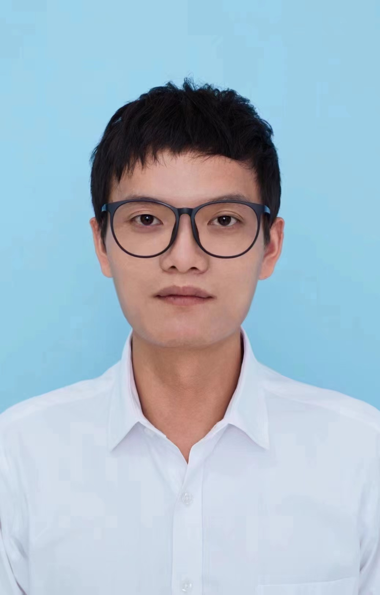
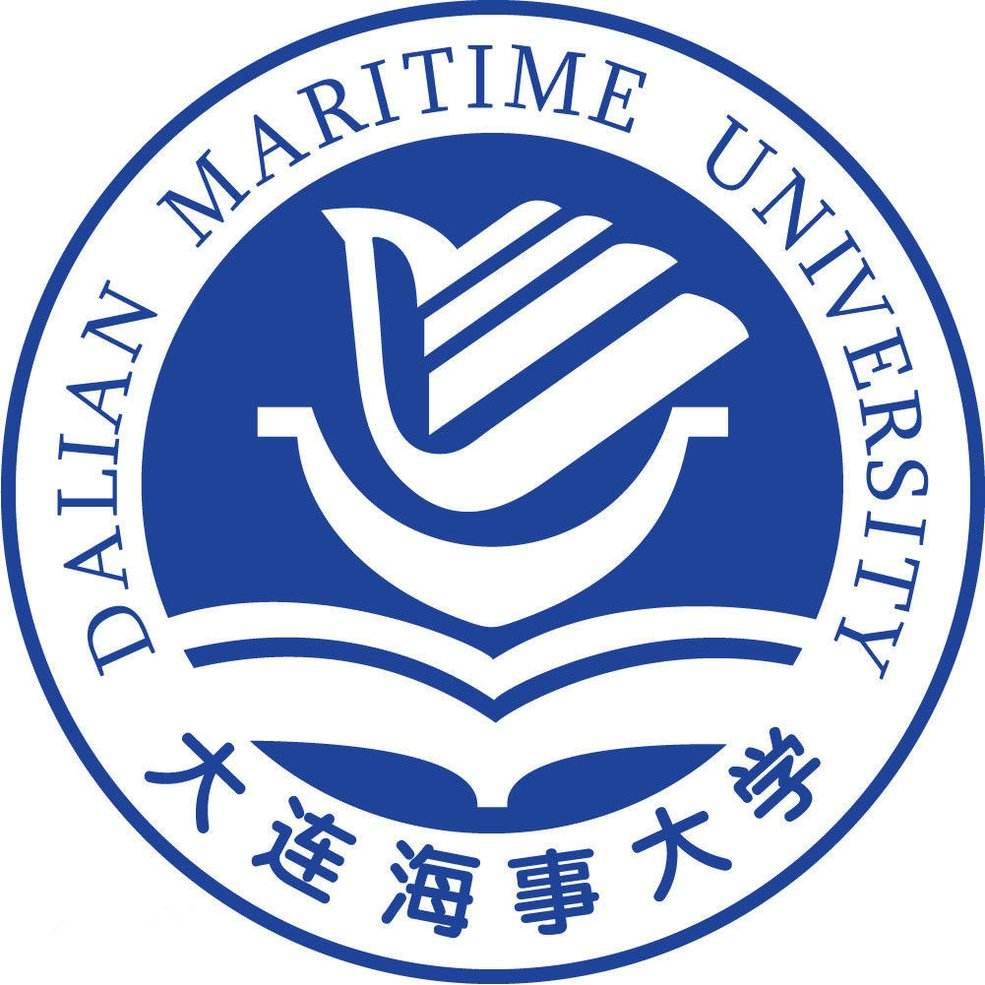
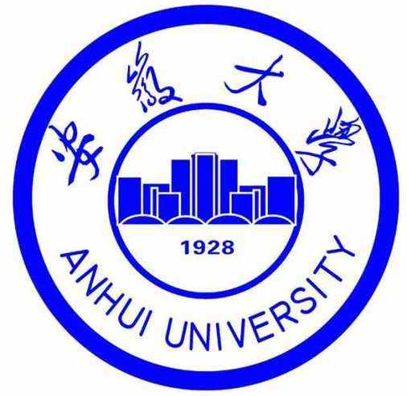

|  | 博士，讲师 |
我于2016年9月至2021年12月在大连海事大学信息科学技术学院计算机科学与技术专业攻读博士学位，师从付先平教授，主要研究方向是水下光学图像成像模型以及模型驱动的水下光学图像清晰化方法研究。 本人已于2022年2月入职安徽大学互联网学院，从事图像处理、目标识别、机器学习等相关方向的研究和教学工作。
我的研究兴趣主要包括: 图像处理, 小目标识别, 车辆检测与再识别等。
|  | 博士 大连海事大学 (2016.9 ~ 2021.12)
|
|  | 讲师 安徽大学 (2022.02 ~ 至今)
|
Underwater Image Quality Improvement via Color, Detail, and Contrast Restoration
Zheng Liang，Weidong Zhang，Rui Ruan，Peixian Zhuang，Xiwang Xie and Chongyi Li*
Submitted to IEEE Transactions on Circuits and Systems for Video Technology, 2022. (视频多媒体领域TOP期刊)
An Underwater Image Restoration Method Based on Adaptive Brightness Improvement Local Image Descattering
Zheng Liang，Rui Ruan，Lin Jiao, Weidong Zhang, Peixian Zhuang*
Submitted to IEEE Geoscience and Remote Sensing Letters, 2022. (遥感领域权威期刊)
GIFM: An Image Restoration Method With Generalized Image Formation Model for Poor Visible Conditions
Zheng Liang，Weidong Zhang，Rui Ruan，Peixian Zhuang and Chongyi Li*
IEEE Transactions on Geoscience and Remote Sensing, 2022. (遥感领域TOP期刊)
Image Restoration Method based on Adaptive Multiple Priors Fusion in Scattering Scenes
Rui Ruan, Weihui Zeng, Zheng Liang*(通讯作者)
International Conference on Graphics and Image Processing (ICGIP), 2022, (图像处理领域知名会议)
DAMNet: Dual Attention Mechanism Deep Neural Network for Underwater Biological Image Classification
Peixin Qu, Tengfei Li, Ling Zhou, Songlin Jin, Zheng Liang, Wenyi Zhao and Weidong Zhang
IEEE Access, 2022.
Underwater Image Enhancement via Piecewise Color Correction and Dual Prior Optimized Contrast Enhancement
Weidong Zhang, Songlin Jin, Peixian Zhuang, Zheng Liang, and Chongyi Li
IEEE Signal Processing Letters, 2022. (信号处理领域权威期刊)
UDCNet: Unified multi-color-model-learning-based deep cascaded network for underwater image classification
Weidong Zhang, Guohou Li, Peixian Zhuang*, Xiwang Xie, Zheng Liang, Wenyi Zhao
Submitted to Neurocomputing, 2022. (人工智能领域Top期刊)
混合卷积神经网络对于高光谱小麦品种鉴别
李国厚，李泽旭，金松林，赵文义，潘细朋，梁政，张卫东
光谱学与光谱分析, 2022.
A Unified Total Variation Method for Underwater Image Enhancement
Xueyan Ding，Yafei Wang，Zheng Liang，Xianping Fu*
Knowledge-based Systems, 2022. (人工智能领域TOP期刊)[PDF]
GUDCP: Generalization of Underwater Dark Channel Prior for Underwater Image Restoration
Zheng Liang，Xueyan Ding，Yafei Wang，Xiaohong Yan，Xianping Fu*
IEEE Transactions on Circuits and Systems for Video Technology, 2021. (视频多媒体领域TOP期刊)[PDF]
Single Underwater Image Enhancement by Attenuation Map Guided
Color Correction and Detail Preserved Dehazing
Zheng Liang, Yafei Wang, Xueyan Ding, Zetian Mi and Xianping Fu*
Neurocomputing, 2021. (人工智能领域TOP期刊)[PDF]
Effective Polarization-Based Image Dehazing with Regularization Constraint
Zheng Liang, Xueyan Ding, Zetian Mi, Yafei Wang* and Xianping Fu
IEEE Geoscience and Remote Sensing Letters, 2021. (遥感领域权威期刊)[PDF]
A Color Cast Image Enhancement Method based on Affine Transform in Poor Visible Conditions
Zheng Liang, Yafei Wang, Xueyan Ding, Xianping Fu*
IEEE Geoscience and Remote Sensing Letters, 2021. (遥感领域权威期刊)[PDF]
Image Descattering and Absorption Compensation in Underwater Polarimetric Imaging
Xianping Fu, Zheng Liang*(通讯作者), Xueyan Ding, Xinyue Yu and Yafei Wang
Optics and Lasers in Engineering, 2020. (光学领域权威期刊)[PDF]
A Generalized Enhancement Framework for Night-time Hazy Image
Zetian Mi, Yuanyuan Li, Jie Jin, Zheng Liang*(通讯作者) and Xianping Fu
IEEE Geoscience and Remote Sensing Letters, 2021. (遥感领域权威期刊)[PDF]
Adaptive Underwater Image Recovery using Polarimetric Imaging
Zheng Liang, Congcong Zhao, Yafei Wang, Xueyan Ding, Zetian Mi, Xianping Fu*
International Conference on Graphics and Image Processing (ICGIP), 2018.[PDF]
Depth-aware Total Variation Regularization for Underwater Image Dehazing
Xueyan Ding, Zheng Liang, Yafei Wang and Xianping Fu
Signal Processing: Image Communication, 2021.
Continuous Driver's Gaze Zone Estimation using RGB-D Camera
Yafei Wang, Guoliang Yuan, Zetian Mi, Jinjia Peng, Xueyan Ding, Zheng Liang and Xianping Fu*
Sensors, 2019.
Towards Underwater Image Enhancement using Super-resolution Convolutional Neural Networks
Xueyan Ding, Yafei Wang, Zheng Liang, Jun Zhang and Xianping Fu*
International Conference on Internet Multimedia Computing and Service (ICIMCS), 2017.
高清水下摄像头
付先平, 赵彤彤, 闫于霄, 梁政, 王帷洋
国家发明专利, 公开号:CN 208424528U
融合光场和偏振信息的水下图像优化方法
付先平, 梁政, 王亚飞, 米泽田
国家发明专利, 公开号:CN111738941A
安徽大学博士科研启动经费(No. S020318015/030)
负责人; 经费:8万元
安徽大学博士科研启动经费
基于仿生视觉的近浅海水下小目标光学感知与识别方法(No. 62176037)
主要参与人; 经费:59万元
国家自然科学基金委面上项目
真实海洋环境中水下机器人视觉图像清晰化方法研究(No. 61802043)
主要参与人; 经费:21万元
国家自然科学基金委青年项目
水下机器人推进水产水产养殖业发展关键技术研究及示范工程(No. 201801728)
主要参与人; 经费:**万元
辽宁省重点研发计划项目
大连市海洋牧场建设中水下自主捕捞机器人集群关键技术研究(No. *****)
主要参与人; 经费:300万元
大连市重点学科重大课题研究项目
水下机器人目标识别和抓取技术研究(No. 2018J12GX037)
主要参与人; 经费:50万元
大连市科技创新基金项目
Knowledge-based Systems
Optics and Lasers in Engineering
IEEE Transactions on Consumer Electronics